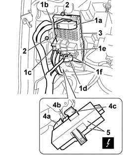

5505A35 MAIN BODY COMPUTER/JUNCTION UNIT - R.R.
- Path
- Procedures > 55 ELECTRICAL EQUIPMENT > 5505 INSTRUMENT/GAUGE ELECTRICAL CIRCUITS > 5505A MULTI-FUNCTION COMPONENTS > 5505A35 MAIN BODY COMPUTER/JUNCTION UNIT - R.R.
- Kind
- repair procedure (removal / refitting; the operation number is the code)
- Applies to
- all engines; all production periods
- Interactive page
- https://sloeber94.github.io/elrnDB-fCrm/en/#/194000672
Applies to: all engines; all production periods
Applies to: all engines; all production periods
 Removing
Removing
 Refitting
Refitting- Turn the ignition key to the OFF position.
- Disconnect the negative battery terminal.
- Wait for 10 minutes before continuing.
Description | Connector | |
|---|---|---|
BATTERY |
Op. 7040A44 LEFT DASHBOARD SIDE TRIM - R.R.
Op. 7040A24 LOWER FACIA COVER TRIM - R+R
1. Disconnect the front electrical connections (1a, 1b, 1c, 1d, 1e, 1f) for the body computer/control unit assembly.
Description | Connector | |
|---|---|---|
1a | BODY COMPUTER |
Description | Connector | |
|---|---|---|
1b | BODY COMPUTER |
Description | Connector | |
|---|---|---|
1c | BODY COMPUTER |
Description | Connector | |
|---|---|---|
1d | BODY COMPUTER |
Description | Connector | |
|---|---|---|
1e | BODY COMPUTER |
Description | Connector | |
|---|---|---|
1f | BODY COMPUTER |
2. Unscrew the bolts securing the body computer/junction unit assembly.
3. Move the body computer/junction unit slightly.
4. Disconnect the rear electrical connections for the body computer/junction unit assembly (4a, 4b, 4c).
Description | Connector | |
|---|---|---|
4a | JUNCTION UNIT UNDER THE DASHBOARD |
Description | Connector | |
|---|---|---|
4b | JUNCTION UNIT UNDER THE DASHBOARD |
Description | Connector | |
|---|---|---|
4c | JUNCTION UNIT UNDER THE DASHBOARD |
5. Remove the body computer/junction unit assembly from the vehicle.
If necessary see,
Op. 5505A10 JUNCTION UNIT - R+R

Applies to: all engines; all production periods
Refitting
Removing- Check that the junction unit and body computer are undamaged.
- Connect the rear electrical connections attaching them to the mountings.
Description | Connector | |
|---|---|---|
JUNCTION UNIT UNDER THE DASHBOARD |
- Fit the assembly in place and secure it using the bolts.
- Connect the front electrical connections attaching them to the mountings.
Description | Connector | |
|---|---|---|
BODY COMPUTER |
- Use an Examiner to check that the system has not acquired errors during the operation.
Op. 7040A24 LOWER FACIA COVER TRIM - R+R
- Connect the negative battery terminal.
Description | Connector | |
|---|---|---|
BATTERY |
Topics linked from this page (7)
- 5505A10 JUNCTION UNIT - R+R
- 5580C AIR BAG SYSTEM
- 7040A24 LOWER FACIA COVER TRIM - R+R
- 7040A44 LEFT DASHBOARD SIDE TRIM - R.R.
- A001 BATTERY
- B002 JUNCTION UNIT UNDER DASHBOARD
- M001 BODY COMPUTER
Topics that link to this page (49)
- A015 ALARM RINGING WITHOUT A REASON
- A020 ALARM SIREN NOT WORKING
- A025 ALARM VOLUMETRIC SURVEILLANCE NOT WORKING
- A035 TILT SENSOR ALARM NOT WORKING
- B001 IGNITION SWITCH NOT WORKING
- G010 NO ACOUSTIC WARNING FOR HANDBRAKE APPLIED WITH VEHICLE MOVING
- K009 DOORS OPEN CHECK WARNING LIGHT/SYMBOL ON
- K020 FUEL LEVEL GAUGE NOT WORKING
- K021 FUEL RESERVE WARNING LIGHT NOT WORKING
- K025 ENGINE COOLANT TEMPERATURE GAUGE NOT WORKING
- K026 ENGINE COOLANT OVERHEATING WARNING LIGHT NOT WORKING
- K030 MINIMUM ENGINE OIL PRESSURE WARNING LIGHT NOT WORKING
- K033 DOORS OPEN CHECK WARNING LIGHT ON
- K043 DISPLAY DOES NOT SHOW AVERAGE CONSUMPTION ON TRIP MODULE
- K060 ABS FAILURE WARNING LIGHT ON
- K062 ABS AND HANDBRAKE WARNING LIGHTS BOTH ON
- K066 HANDBRAKE WARNING LIGHT DOES NOT COME ON (WITH HANDBRAKE APPLIED)
- K068 ESP WARNING LIGHT ON
- K072 HANDBRAKE APPLIED WARNING LIGHT
- K073 SEAT BELT UNFASTENED WARNING LIGHT ON
- K080 AIRBAG FAILURE WARNING LIGHT ON
- K082 PASSENGER AIR BAG DISABLED WARNING LIGHT ON
- K090 INSTRUMENT LIGHTS NOT WORKING
- K091 INSTRUMENT LIGHTS DIMMER NOT WORKING
- K095 INSTRUMENT PANEL NOT WORKING
- K123 WATER IN DIESEL FILTER WARNING LIGHT ON CONSTANTLY
- K124 HEATER PLUGS WARNING LIGHT ON CONSTANTLY
- K125 DISPLAY DOES NOT SHOW RANGE ON TRIP MODULE
- K126 DISPLAY DOES NOT SHOW AVERAGE SPEED ON TRIP MODULE
- K127 DISPLAY DOES NOT SHOW JOURNEY TIME ON TRIP MODULE
- K137 VEHICLE PROTECTION SYSTEM WARNING LIGHT ON CONSTANTLY
- K140 FUEL RESERVE WARNING LIGHT ON (WITH HIGHER LEVEL)
- K142 RECHARGING WARNING LIGHT ON
- K144 ONE WARNING LIGHT ACTIVATED BY STEERING COLUMN SWITCH UNIT ON CONSTANTLY
- K146 ONE WARNING LIGHT OPERATED BY CONTROL PANEL ON CONSTANTLY
- 5040C10 AIR CONDITIONING CASING - R.R
- 5040C50 AIR CONDITIONING HEATER RADIATOR - R.R.
- 5040C64 A/C EVAPORATOR - R+R
- 5040D80 AIR CONDITIONER SYSTEM WIRING BUNDLE - R R OR REPLACE
- 5040D94 AIR CONDITIONING LEFT UPPER AIR DISTRIBUTION FLAP MOTOR (DEFROST) - R.R
- 5505A10 JUNCTION UNIT - R+R
- 5505C10 FRONT CROSSMEMBER WIRING - R.R
- 5505C26 BONNET WIRING - R.R.
- 5505C31 BUILT-IN WIRING UNDER DASHBOARD - R.R.
- 5505C41 PASSENGER COMPARTMENT WIRING - R.R
- 7005A14 FRONT SIDE DOOR - ADJUST CENTERING AND MOULDING - INCLUDES ADAPTATION OF HINGES AND SEALS ON DOOR COMPARTMENT
- 7005A24 FRONT SIDE DOOR HINGES (BOLTED) - R.R. WITH DOOR DETACHED
- 7025A28 BONNET LID OPENING CABLE - R R
- 7040A97 INSTRUMENT PANEL TRIM SUPPORTING CROSSMEMBER - R.R